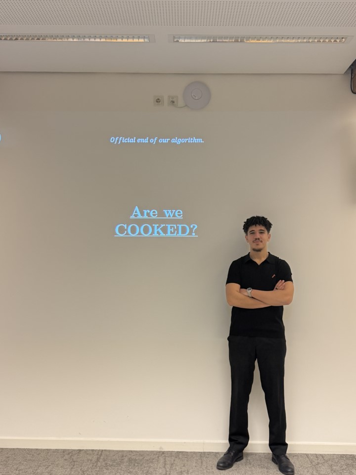
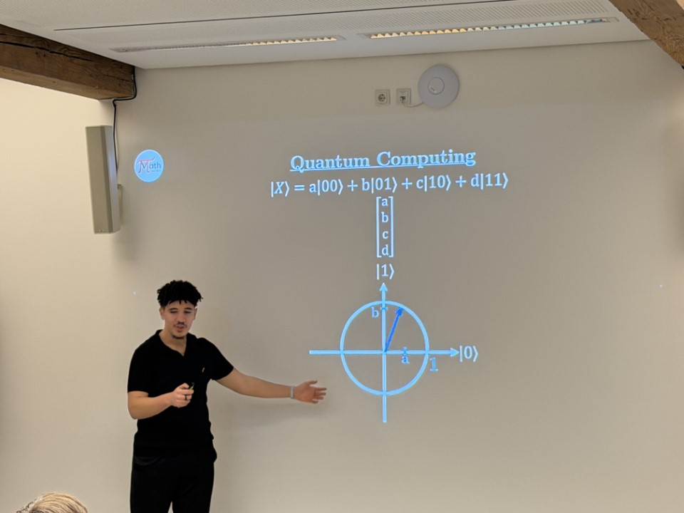

From simple ciphers to secure internet communication, it's all number theory.
Why does your online banking password feel like gibberish? Because it is backed by math.
Cryptography is the art of keeping secrets, and at its core it is built on some of the deepest ideas in mathematics. From the humble Caesar cipher to the public‑key systems that protect your messages, number theory, modular arithmetic and algebraic structures do the heavy lifting.
Watch our club talk where we explored prime numbers, RSA, and the surprising role of elliptic curves:
Math Society Topic Tutorial Series – Cryptography

Every cryptographic algorithm hides in plain sight a mathematical puzzle. For example, RSA relies on the fact that factoring the product of two large primes is computationally infeasible with current technology. Quantum computers threaten this assumption, which is why researchers are already working on post‑quantum schemes.
